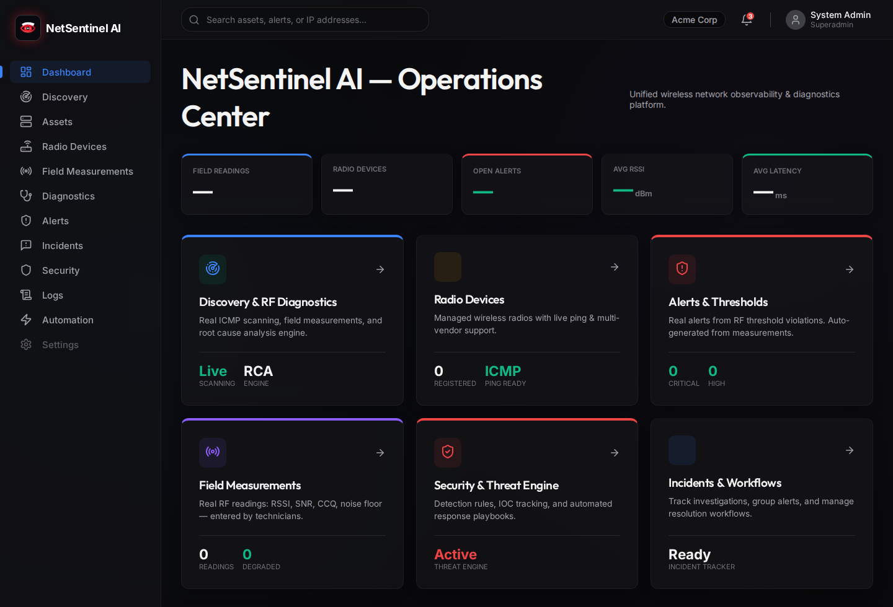
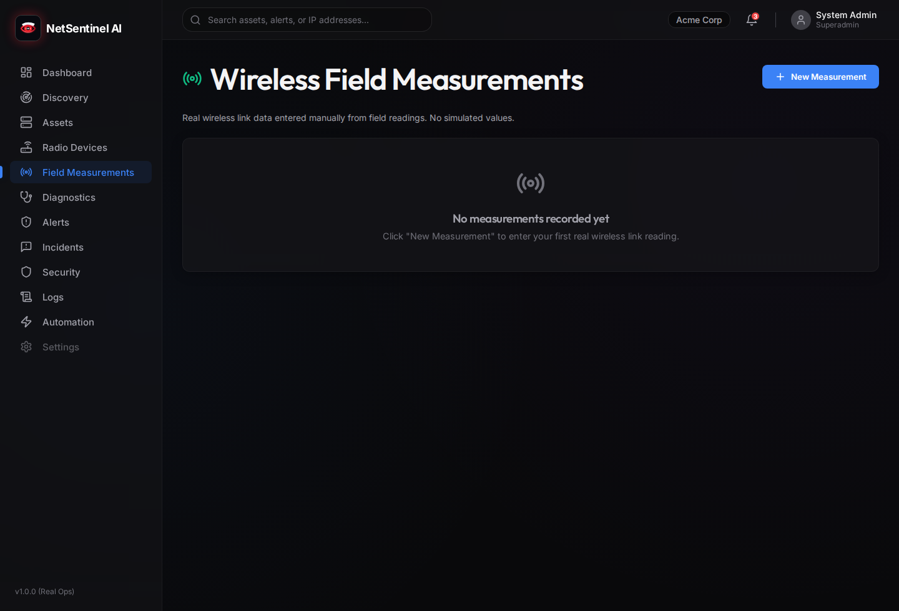

Classification: Confidential - Internal Project and Partner Evaluation
Confidentiality Notice: This document contains project strategy, architecture, technical design, product positioning, and security planning information for NetSentinel AI. It is intended for authorized evaluation by founders, engineers, cybersecurity professionals, network administrators, investors, public institutions, and enterprise reviewers.
Table of Contents
1. Executive Summary
NetSentinel AI is a local-first network management,
observability, cybersecurity, and outdoor wireless radio diagnostics
platform. It is designed to help organizations monitor
infrastructure, manage assets, detect alerts and incidents, analyze
logs, run discovery scans, maintain security rules and indicators of
compromise, automate response playbooks, and diagnose outdoor
wireless radio links using real RF measurement data.
The project currently operates as an MVP / work in progress. Its
runtime model is local deployment with Docker Compose, supported by
a FastAPI backend, Next.js frontend, PostgreSQL database, Redis
queue/cache layer, ARQ background worker, Electron desktop shell,
and a Python-based edge agent for telemetry and wireless metric
collection.
NetSentinel AI exists because many organizations still operate
networks through fragmented tools: one system for assets, another
for logs, another for alerts, spreadsheets for incidents, separate
vendor portals for wireless devices, and informal technician notes
for RF diagnostics. This fragmentation slows response, hides root
causes, and makes operational knowledge hard to preserve.
The platform is intended for network administrators, Wireless ISP
teams, cybersecurity analysts, IT managers, field technicians, small
enterprises, municipalities, and public institutions that need
practical local infrastructure visibility without immediately
adopting a complex cloud SIEM, enterprise NMS, or multiple
disconnected vendor tools.
NetSentinel AI differs from normal monitoring tools by combining
network operations, security monitoring, field workflows,
AI-assisted explanation, and outdoor wireless diagnostics in a
single operational environment. Outdoor wireless diagnostics are
especially important because RF problems are frequently physical,
environmental, intermittent, and difficult to interpret from raw
numbers alone. Metrics such as RSSI, SNR, noise floor, CCQ, latency,
packet loss, frequency, channel width, antenna alignment, and
Fresnel zone clearance must be interpreted together.
MVP Limitation
NetSentinel AI should not currently be described as
production-ready. The codebase shows a runnable foundation, but
additional validation, tests, security hardening, RBAC, audit
logging, rate limiting, deployment hardening, and real integrations
are required before enterprise production use.
2. Product Interface Preview
The following interface captures show the current MVP visual
direction. They demonstrate the desktop-style operations experience
and the field workflow surface for wireless measurements. These
screens should be understood as MVP / work-in-progress views, not
final production claims.

Operations Center dashboard showing
the dark NOC-style navigation, operational cards, alert counters,
discovery entry points, and module shortcuts.
Figure: Operations Center Dashboard. This screen
demonstrates the unified operations landing page, including
navigation to discovery, assets, radio devices, field measurements,
alerts, incidents, security, logs, and automation.

Wireless Field Measurements page
showing the technician-facing RF measurement surface and empty-state
behavior when no measurements are recorded.
Figure: Wireless Field Measurements. This screen
demonstrates the field data entry workflow for real wireless link
readings such as RSSI, SNR, CCQ, noise floor, packet loss, and
latency.
3. Project Vision
The long-term vision for NetSentinel AI is to become a
local-first NOC/SOC platform for organizations that need operational
control, network visibility, security awareness, and field-grade
wireless diagnostics without surrendering all operational data to
external cloud services.
The platform vision includes:
Area
Vision
Local-first operations
Run core infrastructure monitoring locally, on-premise, or
inside controlled private environments.
Network visibility
Maintain a unified inventory of organizations, sites, assets,
wireless links, measurements, alerts, incidents, and logs.
Cybersecurity monitoring
Detect suspicious events using rules, IOCs, logs, and correlated
alerts.
Wireless RF diagnostics
Translate raw RF measurements into technician-ready diagnostic
insight.
AI-assisted troubleshooting
Explain incidents, summarize logs, propose likely causes, and
recommend next steps based on internal evidence.
Automation
Use playbooks and response actions to standardize incident
handling while preserving human approval.
Desktop-first experience
Provide a familiar local desktop launcher for operators who
prefer an installed NOC/SOC workstation experience.
Future Improvement
The ideal mature version should support real-time updates, robust
agent management, scheduled discovery, role-based dashboards, SIEM
export, SNMP integrations, wireless vendor adapters, PDF reporting,
and compliance workflows.
4. Problem Statement
Network and security teams often operate under pressure with
incomplete or disconnected information. In many small and medium
organizations, the operator must switch between router interfaces,
wireless controller portals, spreadsheets, manual notes, log files,
ticket systems, and messaging channels to understand a single
incident.
Key problems include:
Problem
Operational Impact
Fragmented tools
Slow troubleshooting and inconsistent incident records.
Disconnected assets, alerts, logs, and incidents
Root cause analysis becomes manual and error-prone.
Limited local NOC/SOC affordability
Smaller organizations cannot justify large enterprise
platforms.
Difficult outdoor wireless diagnosis
RF problems require specialized knowledge and field
context.
Weak historical context
Technician observations and measurements are not preserved in a
structured way.
Limited automation
Teams repeat manual triage and response steps during recurring
incidents.
Security blind spots
IOCs, rules, and logs may not be connected to operational assets
and incidents.
Outdoor wireless environments add a specialized layer of
difficulty. A link can degrade because of interference, antenna
misalignment, cable damage, water ingress, vegetation growth, tower
movement, Fresnel zone obstruction, thermal effects, frequency
reuse, or asymmetric endpoint conditions. Raw signal values alone
rarely tell the full story.
5. Proposed Solution
NetSentinel AI proposes a unified local platform that connects
network operations, cybersecurity visibility, wireless diagnostics,
and automation into one operational workspace.
Core solution components include:
Component
Contribution
Centralized dashboard
Provides a single operations view for assets, alerts, incidents,
wireless links, logs, and security posture.
Asset inventory
Maintains structured records of network devices, servers,
endpoints, and related sites.
Discovery scans
Performs network scan workflows and stores discovered host
results.
Alerts and incidents
Converts operational or security findings into structured
workflows.
Security rules and IOCs
Supports security detection concepts and future threat
correlation.
Logs
Provides storage and review surfaces for event and system
logs.
Automation playbooks
Supports future standardized response actions.
Edge telemetry agent
Collects telemetry and wireless metrics near the monitored
environment.
Wireless measurement forms
Captures field measurements and RF diagnostics data.
AI assistant
Explains alerts, incidents, and wireless problems using internal
evidence.
Docker deployment
Makes the MVP reproducible locally.
Desktop launcher
Gives operators a native desktop entry point into the local
dashboard.
Device IPs, community strings, vendor profile, backend URL,
agent key.
Outputs
Normalized telemetry and wireless metrics sent to backend.
Current MVP state
Python agent entry point and polling structure exist.
Future improvements
Secure enrollment, offline queue, configuration sync, vendor
adapters, health reporting.
Desktop Client
Category
Description
Purpose
Provide a native desktop shell for local operators.
Main features
Electron window opening local dashboard, Linux launcher script,
desktop entry.
Inputs
Local frontend URL and Docker Compose service status.
Outputs
Desktop application experience.
Current MVP state
Electron client and launcher exist.
Future improvements
Tray icon, auto-start, local health indicator, packaging for
Linux and Windows.
8. Technical Architecture
High-Level Architecture
NetSentinel AI follows a modular local-first architecture. The
MVP is deployed as a Docker Compose stack with a web dashboard, API
backend, relational database, queue/cache layer, worker process, and
edge telemetry agent.
flowchart TB
User[Operator / Analyst / Technician]
Desktop[Electron Desktop Client]
Frontend[Next.js 14 Frontend]
API[FastAPI Backend API]
DB[(PostgreSQL 16)]
Redis[(Redis 7)]
Worker[ARQ Worker]
Agent[Python Edge Agent]
Devices[Network Devices / Radios]
User --> Desktop
User --> Frontend
Desktop --> Frontend
Frontend --> API
API --> DB
API --> Redis
Redis --> Worker
Worker --> DB
Agent --> API
Agent --> Devices
Frontend Architecture
The frontend is a Next.js 14 application using TypeScript, React
18, CSS modules, SWR, Recharts, and lucide-react icons. It provides
pages for the dashboard, assets, alerts, incidents, logs, security,
automation, discovery, wireless, diagnostics, radio devices, and
field measurements.
The backend is a FastAPI application with routers, schemas,
SQLAlchemy models, service modules, authentication dependencies, AI
modules, ingestion endpoints, and worker integration.
PostgreSQL stores core operational data: organizations, users,
sites, assets, alerts, incidents, logs, security rules, IOCs, radio
devices, wireless links, metrics, field measurements, diagnostics,
automation playbooks, and response actions. SQLAlchemy models define
the persistence layer and Alembic is present for migrations.
Redis / Queue Architecture
Redis is used as a cache and queue foundation. The ARQ worker is
wired through Redis and is intended to support future scheduled
tasks, alert processing, telemetry processing, discovery jobs,
notification jobs, and automation workflows.
Edge Agent Architecture
The edge agent is a standalone Python process intended to run
near customer networks. It includes SNMP polling concepts, wireless
metric collection, and backend transport. The current implementation
includes demo wireless targets and a polling loop.
Desktop Client
Architecture
The Electron desktop client wraps the local dashboard. The Linux
launcher starts Docker Compose services, waits for frontend/backend
readiness, and opens the local interface.
sequenceDiagram
participant UI as Next.js Frontend
participant API as FastAPI Backend
participant DB as PostgreSQL
UI->>API: HTTP request to /api/v1/*
API->>API: Validate request and auth dependency
API->>DB: SQLAlchemy async query
DB-->>API: Result rows
API-->>UI: JSON response
Data Ingestion Flow
flowchart LR
Device[Device / Radio / Network Source]
Agent[Edge Agent]
API[Telemetry Ingestion Endpoint]
DB[(PostgreSQL)]
Alerts[Alert Engine]
UI[Dashboard]
Device --> Agent
Agent --> API
API --> DB
API --> Alerts
Alerts --> DB
DB --> UI
Authentication Flow
sequenceDiagram
participant User
participant UI as Frontend
participant API as FastAPI Auth Router
participant DB as PostgreSQL
User->>UI: Submit email and password
UI->>API: POST /api/v1/auth/login
API->>DB: Load user by email
DB-->>API: User record
API->>API: Verify bcrypt password
API-->>UI: JWT access token and refresh token
UI->>API: Request protected resource with Bearer token
API->>API: Validate JWT
API-->>UI: Protected response
Wireless Measurement Flow
flowchart TB
Tech[Field Technician]
Form[Field Measurement Form]
API[Measurements API]
DB[(PostgreSQL)]
Diagnostics[Wireless Diagnostics Logic]
Report[Diagnostic Report]
Tech --> Form
Form --> API
API --> DB
DB --> Diagnostics
Diagnostics --> Report
sequenceDiagram
participant Operator
participant UI
participant API as AI Assistant API
participant DB as Internal Data
participant LLM as Optional LLM Provider
Operator->>UI: Ask question or request analysis
UI->>API: POST /api/v1/ai-assistant/chat
API->>DB: Collect relevant internal context
alt API key configured
API->>LLM: Send constrained prompt
LLM-->>API: Draft answer
else fallback mode
API->>API: Generate fallback response
end
API-->>UI: Explanation with timestamp
Conceptual Entity
Relationship Diagram
erDiagram
ORGANIZATION ||--o{ USER : has
ORGANIZATION ||--o{ SITE : contains
SITE ||--o{ ASSET : hosts
SITE ||--o{ WIRELESS_LINK : includes
ASSET ||--o{ ALERT : triggers
WIRELESS_LINK ||--o{ WIRELESS_METRIC : records
WIRELESS_LINK ||--o{ FIELD_DIAGNOSTIC : has
WIRELESS_LINK ||--o{ MAINTENANCE_LOG : has
ALERT }o--o{ INCIDENT : grouped_into
ORGANIZATION ||--o{ DETECTION_RULE : owns
ORGANIZATION ||--o{ IOC : owns
ORGANIZATION ||--o{ PLAYBOOK_RULE : owns
PLAYBOOK_RULE ||--o{ RESPONSE_ACTION : creates
Incident Workflow Diagram
stateDiagram-v2
[*] --> Open
Open --> Investigating
Investigating --> Mitigating
Mitigating --> Resolved
Resolved --> Closed
Investigating --> Escalated
Escalated --> Mitigating
Open --> FalsePositive
FalsePositive --> Closed
9. Backend Documentation
The FastAPI backend is the authoritative API layer for
NetSentinel AI. It exposes /api/v1/* routers, manages
application startup, initializes database tables during MVP runtime,
configures CORS, and provides a /health endpoint.
API Structure
Area
Endpoint Group
Role
Authentication
/api/v1/auth/*
Register, login, refresh, current user.
Organizations
/api/v1/organizations/*
Multi-organization management.
Sites
/api/v1/sites/*
Physical/logical site records.
Assets
/api/v1/assets/*
Device and infrastructure inventory.
Alerts
/api/v1/alerts/*
Alert lifecycle and stats.
Incidents
/api/v1/incidents/*
Incident workflow and stats.
Logs
/api/v1/logs/*
Log creation and listing.
Security
/api/v1/security/*
Detection rules and IOCs.
Automation
/api/v1/automation/*
Playbooks and response actions.
Discovery
/api/v1/discovery/*
Scans and discovered hosts.
Wireless
/api/v1/wireless/*
Links, metrics, diagnostics, maintenance.
Field Measurements
/api/v1/field-measurements/*
Field measurement records.
Radio Devices
/api/v1/radio-devices/*
Radio inventory and diagnostics.
AI Assistant
/api/v1/ai-assistant/*
Chat, alert analysis, incident analysis.
Telemetry
/api/v1/metrics
Telemetry ingestion endpoint.
Authentication and JWT
The backend uses JWT access and refresh tokens. Password hashing
uses bcrypt. The MVP settings define access token and refresh token
lifetimes through environment variables.
Security Note
The default development secret key must be changed before any shared
or production-like deployment. JWT signing secrets should be
generated with high entropy and stored outside source control.
Validate action permissions and require approval for risky
actions.
Backend Security
Recommendations
Risk
Recommendation
Weak JWT secret
Use a generated production secret and rotate safely.
Missing RBAC
Add roles, permissions, and organization isolation tests.
Exposed APIs
Add rate limiting, request size limits, and stricter CORS.
Telemetry abuse
Require agent identity, signed payloads, and replay
protection.
AI misuse
Apply prompt injection controls and evidence-bound
responses.
10. Frontend Documentation
The frontend is a Next.js 14 application written in TypeScript.
It is the primary operator interface for the platform and provides
pages for dashboard operations, assets, alerts, incidents, logs,
security, automation, discovery, wireless links, diagnostics, radio
devices, and field measurements.
UX Goals
Goal
Description
Operational clarity
Present dense network/security data in a scannable way.
Low friction
Minimize clicks required for common investigation
workflows.
Consistent navigation
Use stable sidebar navigation and predictable page layouts.
Professional trust
Maintain serious visual tone suitable for NOC/SOC
environments.
Field usability
Support technicians recording wireless measurements
quickly.
Frontend Elements
Element
Expected Behavior
Dashboard UI
Summary cards, alerts, recent status, navigation into core
modules.
Sidebar navigation
Persistent module access with clear labels.
Operational cards
Compact metrics, state counts, and urgent indicators.
Empty states
Explain absence of data without implying system failure.
Forms
Validate input, show clear errors, protect destructive
actions.
Tables
Sortable/filterable lists for assets, logs, alerts, incidents,
devices.
Wireless pages
Display RF metrics, diagnostics, maintenance history, and field
actions.
Security pages
Expose rules, IOCs, risk states, and future detections.
Automation pages
Display playbooks, actions, and approval status.
Frontend Recommendations
Area
Recommendation
Loading states
Add skeleton rows/cards for all API-backed pages.
Error states
Show actionable messages and retry controls.
Empty states
Provide contextual next actions, such as “Add asset” or “Run
scan”.
Form validation
Use shared schemas or generated API types where possible.
Responsive layout
Ensure field technician pages work on tablets and small
laptops.
Accessibility
Maintain keyboard navigation, focus states, semantic headings,
and contrast.
Design system
Standardize badges, severities, status colors, tables, forms,
and modals.
11. Database Documentation
PostgreSQL 16 is the primary data store. It stores operational
entities, security entities, wireless diagnostics data, user and
organization context, and automation records.
Main Entities
Entity
Purpose
Organization
Tenant or administrative owner of records.
User
Authenticated platform user.
Site
Physical or logical location.
Asset
Network device, server, endpoint, or managed infrastructure
item.
Alert
Operational or security condition requiring attention.
Incident
Investigation workflow, usually grouping related alerts.
LogEntry
Event/log record for observability and security review.
The Python edge agent is intended to collect telemetry close to
the monitored environment. It can poll devices, normalize
measurements, and send data to the backend.
Current Purpose
Function
Description
Telemetry collection
Collect measurements from local devices and radios.
Wireless metrics
Poll RSSI, SNR, CCQ, and related RF indicators where vendor
support exists.
Local discovery
Future role for agent-based scans inside protected
networks.
Backend communication
Push normalized metrics to the NetSentinel API.
Agent Security
Requirements
Requirement
Recommendation
Agent identity
Assign each agent a unique ID and organization binding.
Agent authentication
Use signed tokens or mTLS rather than static development
keys.
Payload integrity
Sign telemetry payloads and reject replayed timestamps.
Least privilege
Do not store broad device credentials in plain text.
Auditability
Log enrollment, configuration changes, and rejected
payloads.
Retry and Offline Behavior
The mature agent should queue events locally when the backend is
unavailable, retry with exponential backoff, preserve ordering where
required, and report its own health. Offline queues should have
retention limits, disk usage controls, and secure local storage.
13. Wireless Diagnostics
Outdoor wireless links require specialized diagnostic logic
because link quality is affected by RF physics, antenna placement,
weather, interference, channel planning, device configuration, and
physical installation quality.
Wireless Link Types
Type
Description
Point-to-point
A dedicated link between two sites, commonly used for
backhaul.
Point-to-multipoint
One access point communicates with multiple stations or
CPEs.
RF and Quality Metrics
Metric
Meaning
RSSI
Received Signal Strength Indicator, commonly expressed in dBm.
Less negative is stronger.
SNR
Signal-to-noise ratio. Higher values usually indicate cleaner
signal quality.
Noise floor
Background RF noise level. A high noise floor can reduce usable
signal quality.
CCQ
Client Connection Quality or link quality indicator, often
reflecting retransmissions and stability.
Latency
Round-trip delay. High latency may indicate congestion,
retransmissions, or poor RF quality.
Packet loss
Percentage of packets lost. Loss directly affects voice, video,
and data reliability.
TX/RX capacity
Estimated transmit and receive throughput capacity.
Frequency
Operating frequency/channel. Poor frequency planning can cause
interference.
Channel width
RF channel width. Wider channels can improve throughput but
increase noise exposure.
Antenna alignment
Physical aiming quality between endpoints. Misalignment reduces
RSSI and SNR.
Fresnel zone
Elliptical path around line-of-sight that should remain clear
for strong propagation.
Interference
Competing RF energy that reduces signal quality and
stability.
Modulation
Encoding scheme used by radio link. Lower modulation often means
degraded link quality.
Link degradation
Decline in performance caused by RF, physical, configuration, or
environmental problems.
Diagnostic Logic Table
Condition
Possible Cause
Severity
Recommended Technician Action
Weak RSSI
Antenna misalignment, obstruction, cable loss, wrong antenna
gain, water ingress.
Medium to Critical
Inspect line of sight, verify Fresnel zone, check mounts,
perform alignment sweep, inspect connectors.
Low SNR
Interference, high noise floor, weak signal, poor channel
selection.
The proposed health score ranges from 0 to 100. It should be
deterministic, explainable, and based on weighted RF and performance
indicators.
Score Range
Meaning
Operational Interpretation
90-100
Excellent
Link is healthy with strong margin.
75-89
Good
Link is usable with minor monitoring recommendations.
60-74
Degraded
Link needs review; performance risk is present.
40-59
Poor
Field intervention likely required.
0-39
Critical
Service-impacting failure or imminent failure likely.
Suggested scoring weights:
Metric
Weight
RSSI versus expected baseline
20
SNR
20
Noise floor
15
CCQ / retransmission quality
15
Packet loss
15
Latency
10
Capacity symmetry
5
Important
RF thresholds must be vendor-aware and band-aware. A universal
threshold can be useful for MVP triage, but production diagnostics
should account for radio model, frequency band, link distance,
antenna gain, modulation, channel width, and environmental
profile.
14. Cybersecurity
NetSentinel AI aims to provide local-first security monitoring by
connecting logs, security rules, indicators of compromise, alerts,
incidents, and automation workflows.
Security Monitoring Goals
Goal
Description
Detect suspicious activity
Use rules, IOCs, logs, and telemetry to identify abnormal
events.
Preserve local control
Keep sensitive operational data inside the local deployment by
default.
Connect security to operations
Link security events to assets, incidents, and response
workflows.
Support analyst review
Provide evidence, timeline, severity, and remediation
context.
RBAC, audit logs, encryption, redaction, least privilege.
Missing rate limiting
APIs can be abused or overloaded.
Add per-user and per-agent rate limits.
Missing RBAC
Users may access data outside their role.
Implement roles, permissions, and organization isolation
tests.
Missing tests
Regressions can compromise reliability.
Add unit, integration, API, security, and E2E tests.
Missing audit logs
Security actions lack traceability.
Record authentication, configuration, automation, and privileged
actions.
Security Note
Local-first does not automatically mean secure. It reduces cloud
exposure, but the local deployment still requires secrets
management, least privilege, secure configuration, and regular
updates.
15. Deployment Documentation
Local Deployment
The MVP runtime is Docker Compose. The stack includes PostgreSQL,
Redis, backend, frontend, worker, and edge-agent services.
Use Docker group configuration or authorized pkexec
workflow.
Backend cannot connect to DB
Check DATABASE_URL, service name, and PostgreSQL
health.
Frontend cannot call API
Check NEXT_PUBLIC_API_URL and CORS origins.
Desktop window opens early
Wait for Docker build and service readiness.
AI returns fallback
Configure GEMINI_API_KEY if live provider behavior
is required.
Backup Recommendations
Asset
Recommendation
PostgreSQL data
Schedule pg_dump backups and test restores.
Environment secrets
Store outside Git and back up securely.
Uploaded reports
Store in versioned object/file storage if uploads are
added.
Configuration
Export rules, IOCs, playbooks, and agent configs.
Production Hardening
Recommendations
Area
Recommendation
Network exposure
Do not expose database or Redis publicly.
TLS
Terminate HTTPS through a reverse proxy.
Secrets
Use a secret manager or secure environment injection.
Authentication
Add RBAC, audit logs, token revocation, and secure cookie
strategy.
Containers
Run non-root, pin images, scan dependencies, set resource
limits.
Database
Use backups, migration discipline, least-privilege DB
users.
16. Desktop Client
Electron is used to provide a local desktop experience for
operators. Instead of requiring operators to remember URLs or
manually open a browser, the desktop shell launches the local
dashboard in a native window.
Advantages
Advantage
Description
Familiar application model
Operators can open NetSentinel AI from the Linux application
menu.
Local workstation feel
Supports NOC/SOC workstation workflows.
Controlled entry point
Launcher can start services and open the dashboard.
Future system integration
Can support tray status, notifications, and local service
health.
Future Improvements
Feature
Value
Tray icon
Quick status and launch controls.
Auto-start
Start monitoring environment after login.
Local status indicator
Show backend/frontend/database readiness.
Update system
Support packaged updates.
Offline mode
Show cached status when services are unavailable.
Packaged installers
Linux and Windows deployment packages.
17. AI Assistant
The AI assistant is intended to help operators understand
incidents, alerts, wireless diagnostics, logs, and remediation
options. It should act as an explanation and decision-support layer,
not an autonomous authority.
Use Cases
Use Case
Description
Incident explanation
Summarize what happened and why it matters.
Wireless diagnostics
Explain RF degradation and suggest field actions.
Log summarization
Identify patterns and important events in logs.
Root cause analysis
Generate hypotheses based on internal evidence.
Suggested remediation
Propose next steps while requiring human approval.
AI Risks
Risk
Description
Hallucination
AI may invent causes or remediation steps.
Prompt injection
Malicious logs or user prompts may manipulate output.
Sensitive data exposure
Internal logs and topology may contain confidential
information.
Overtrust
Operators may follow AI recommendations without
verification.
Mitigations
Mitigation
Description
Evidence-based answers
Tie output to internal records and observed metrics.
Source citations
Reference incident IDs, alert IDs, logs, and metrics used.
Confidence levels
Expose uncertainty and alternative explanations.
Human approval
Require approval before automation or remediation actions.
Redaction
Remove secrets and sensitive fields before model calls.
18. Automation
Automation should standardize recurring operational and security
responses without removing operator control.
Automation Concepts
Concept
Description
Playbook
Rule or workflow describing when and how to respond.
Action
Recorded or executed response step.
Human approval
Approval gate before risky changes.
Incident response
Standard process for triage, containment, remediation, and
closure.
Alert handling
Deduplication, escalation, assignment, and notification.
Future Automated
Remediation
Potential actions include creating tickets, sending
notifications, quarantining an asset, blocking an IP, restarting a
service, scheduling a field visit, or generating a PDF incident
report. High-risk actions must be approval-based and fully
audited.
19. Current MVP Status
Area
Status
Notes
Docker Compose local runtime
Implemented
Compose defines PostgreSQL, Redis, backend, frontend, worker,
and edge-agent.
FastAPI backend
Implemented
Main app and routers exist.
Next.js frontend
Implemented
Multiple operational pages exist.
PostgreSQL models
Implemented
Core models are present.
JWT authentication
Implemented
Register, login, refresh, and current user routes exist.
MVP Limitation
A formal test suite was not clearly present in the checked source
tree. Adding tests should be treated as a near-term engineering
priority.
22. Security Hardening
Checklist
Item
Status
Strong JWT secret configured outside Git
Required
Access and refresh token expiration reviewed
Required
RBAC implemented
Required before production
Organization isolation enforced and tested
Required before production
Input validation for all endpoints
Required
API rate limiting
Required
CORS restricted to trusted origins
Required
Docker ports not publicly exposed
Required
Secrets management process
Required
Audit logs for auth/config/automation
Required
Password hashing with secure parameters
Present concept; verify settings
Database backup and restore tested
Required
Dependency scanning
Required
API abuse protection
Required
Telemetry agent authentication
Required
AI endpoint protection and prompt injection mitigation
Required
Security headers through reverse proxy
Recommended
TLS termination
Required beyond local-only use
Log redaction
Recommended
Incident export controls
Recommended
23. Business and Product
Positioning
NetSentinel AI targets the gap between lightweight device
monitoring tools and large enterprise NMS/SIEM platforms. Many
organizations need practical local visibility, incident workflows,
wireless diagnostics, and security monitoring but cannot justify
large enterprise systems or do not want full cloud dependence.
Market Need
Need
Explanation
Local infrastructure visibility
Organizations need to understand assets, alerts, incidents, and
logs.
Wireless diagnostics
WISPs and public institutions often depend on outdoor radio
links.
Affordable NOC/SOC tooling
Small and medium teams need structured workflows without
enterprise overhead.
Data control
Local-first deployment can support privacy and operational
control.
Differentiation
Differentiator
Value
Local-first architecture
Keeps operational data close to the organization.
Wireless RF focus
Goes beyond standard uptime monitoring.
Combined NOC/SOC model
Connects operations and security workflows.
Desktop launcher
Supports operator workstation usage.
AI-assisted explanation
Helps translate complex evidence into practical actions.
Enterprise Potential
Future commercial positioning could include community edition,
professional support, enterprise licensing, managed appliances, SIEM
integrations, vendor adapters, compliance reporting, and role-based
operational dashboards.
24. Future Enterprise
Features
Feature
Description
Multi-tenant RBAC
Fine-grained roles and permissions across organizations.
SNMP integrations
Standard polling for network infrastructure.
MikroTik integration
RouterOS and wireless device support.
Ubiquiti integration
UISP/airMAX/UniFi-oriented device support where feasible.
TP-Link CPE integration
Support for common wireless CPE deployments.
Syslog ingestion
UDP/TCP syslog collection and parsing.
NetFlow/sFlow
Network traffic flow visibility.
SIEM export
Export alerts/events to external SIEM tools.
PDF reports
Incident, wireless diagnostic, and executive reports.
Role-based dashboards
Different views for executives, analysts, admins, and
technicians.
Notification channels
Email, Slack, Teams, webhooks, SMS.
SLA tracking
Availability and incident response metrics.
Compliance reports
SOC 2, ISO 27001, local policy reporting support.
Backup and restore
Admin-controlled backup lifecycle.
Offline edge collectors
Resilient local agents for remote sites.
25. Official Appendices
Appendix A: Glossary
Term
Meaning
NOC
Network Operations Center.
SOC
Security Operations Center.
RF
Radio Frequency.
RSSI
Received Signal Strength Indicator.
SNR
Signal-to-noise ratio.
CCQ
Connection quality indicator often used in wireless
systems.
IOC
Indicator of Compromise.
JWT
JSON Web Token.
PTP
Point-to-point wireless link.
PTMP
Point-to-multipoint wireless network.
Fresnel zone
Area around wireless line-of-sight that should remain
unobstructed.
ARQ
Async Redis Queue for Python background jobs.
Appendix B: API Reference
Summary
Module
Summary
Auth
Register, login, refresh token, current user.
Organizations
CRUD for organization records.
Sites
CRUD for site records.
Assets
CRUD and stats for assets.
Alerts
CRUD and stats for alerts.
Incidents
CRUD and stats for incidents.
Logs
Create and list log entries.
Security
Manage detection rules and IOCs.
Automation
List playbooks and response actions.
Discovery
Run scans, list scans, list hosts, import hosts as assets.